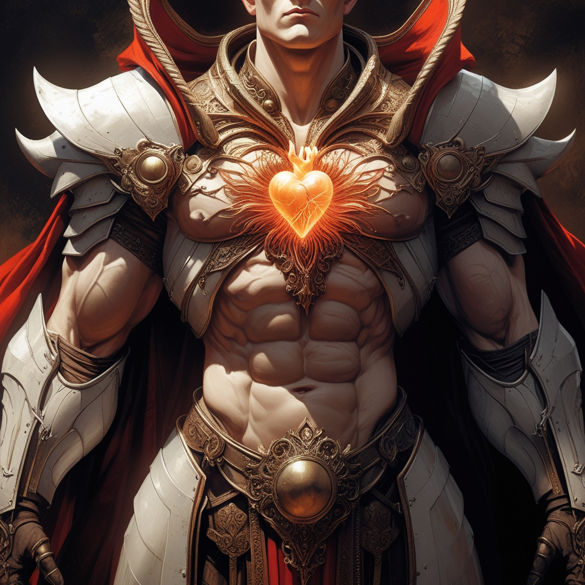

Про всесвіт
Планета під назвою Тік-нур з'явилася ~5млн. років тому. Розумне життя почало з'являтися близько 100тис. років тому а гуманойдна раса 10тис. років тому. Перший каледар з'явився за 1546 років до народження Боді. На Тік-нур є три стехії вода земля вогонь. У кожного створіння є своя магія та характеристики.
Характеристики
| Бодя | Дитина | Доросла люд. | Максимум | |
| сила | 15 | 5 | 10 | 20 |
| ловкість | 8 | 10 | 8 | 20 |
| інтелект | 80 | 90 | 100 | 120 |
| харизма | 3 | 5 | 4 | 5 |
| вогонь | 2 | 1 | 2 | 5 |
| вода | 2 | 1 | 2 | 5 |
| земля | 0 | 1 | 2 | 5 |
Про героя
Бодя народився у 1546р. У шляхетної сім'ї але при родах він упав на підлогу та якимось чином у нього з'вився синдром дауна. Але він не здався та компенсував це силою та ще у нього ністільки великі плечі що здаєтся що на карлика поставили шкаф горозонтально. Зараз Боді 19 років він сидить на шиї своїх батьків.
Про монстрів
Монстрів є три види скелети, слиз, дракон. У кожного є свої не доліки у скелета що він сліпий у слизу що якщо облитися фодою то він тебе не побачить у дракона це вода
Характеристики
| скелет | слиз | Дракон | Максимум | |
| сила | 10 | 3 | 15 | 20 |
| ловкість | 5 | 8 | 15 | 20 |
| інтелект | 50 | 40 | 100 | 120 |
| харизма | -2 | 1 | 3 | 5 |
| вогонь | 0 | 0 | 4 | 5 |
| вода | 0 | 2 | -2 | 5 |
| земля | 1 | 0 | 4 | 5 |